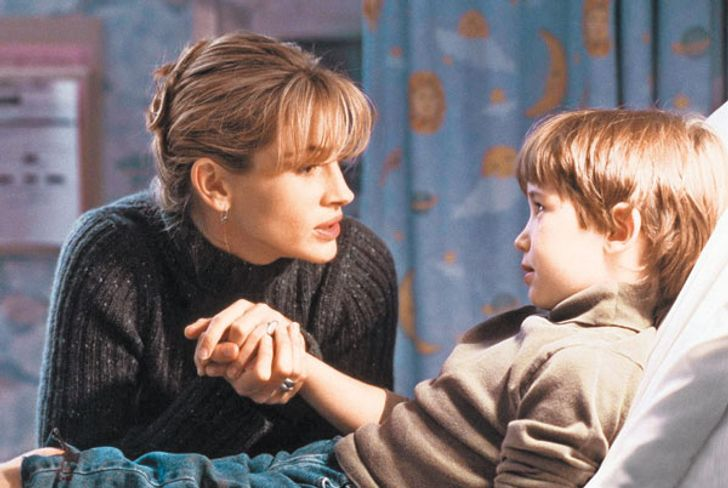

7 советов по воспитанию ребенка от известного психолога и мамы пятерых детей
Всех мам злят детские истерики. Все они устают и срываются на близких. И все тревожатся по пустякам. А Лариса Суркова живет в гармонии с собой и умеет найти общий язык с детьми, а их — на минуточку! — пятеро. Все дело в том, что Лариса — известный психолог, коуч, автор книг. Она знает, что скрывается за детскими истериками и капризами, можно ли сделать так, чтобы дети слушались, и какие хитрости помогают маме не сойти с ума от такого прекрасного, но такого изнуряющего явления, как материнство
ADME попросил прославленного психолога и блогера поделиться с нами несколькими советами, которые будут полезны любой маме.
Совет № 1: Мама обязана отдыхать
Бесполезно рассказывать о любви к себе, отдыхе.... Потому что сами женщины первые кричат: невозможно. Возможно. Давайте рассмотрим варианты.
- Отдых — это смена деятельности, он может быть непродолжительным. Меняйте в каждом дне мелочи. Один день гуляем с коляской налево, а другой — направо.
- Движение — любое: немного приседаний, с ребенком сделать специальную зарядку, фитбол или йога.
- Умейте остановить время. Давайте пробовать сейчас? Ваша задача — отложить телефон, закрыть глаза и представить, например, апельсин. Вы его чистите, сок течет, и вкус кисловатый! Это может занять 3–5 секунд, но позволяет перегрузиться в моменте.
Совет № 2: Почти всегда в капризах и истериках детей виноваты родители
Истерика — это мощный эмоциональный выпад, направленный на выход тех или иных переживаний. Она быстро проходит без внимательных глаз и попыток успокоить. Что еще важно: истерика — это разгрузка. 5–10 минут в возрасте 4–5 лет можно дать прокричаться, а более длительный плач может повлечь за собой проблемы.
Что делать?
- Лучшая борьба — профилактика. Если день был богат на эмоции, искупайте ребенка, раньше положите спать. Если вы знаете, что истерика случается в торговом центре, прекратите ребенка туда водить.
- Истерику раздувают зрители. Пусть с ребенком будет один, самый близкий человек. Ничего не говорите, будьте рядом. Через 2–3 минуты начинайте говорить тихо и твердо, стараясь переключить внимание.
- Отвлекать сложно, но можно пытаться. Говорить можно то, что побуждает к действию: пойти, увидеть, сменить обстановку.
- Одиночество. После 2 лет в знакомой обстановке можно оставить ребенка одного на количество минут, соответствующее возрасту ребенка: 2 года — 2 минуты.
- Держите себя в руках. Помните: малышу тяжело, он растет, меняется, истерика вызвана тем, что маленький человек просто не умеет жить с потоком эмоций.
Почти всегда в детских истериках и капризах виноваты родители. Мы сначала все ребенку разрешаем, а потом вдруг начинаем его воспитывать. Один из факторов капризного поведения — несоответствие позиций мамы и папы. Это порождает внутреннюю тревожность в организме ребенка, он пытается установить комфортные правила жизни методом манипуляции — истерикой.
Совет № 3: Дошкольник просто не умеет делать что-то назло вам
«Он делает мне назло!», «Я не понимаю, чего он от меня хочет», «Ему просто нравится меня доставать!» — как часто можно услышать жалобы от родителей, особенно если ребенку 1–5 лет. Каковы могут быть причины?
- В этом вопросе ваш ребенок — это ваше отражение. Вам грустно, страшно, нет денег, вы злитесь, поругались с супругом? Ребенок будет отзеркаливать вас, а значит... Верно! Раздражать вас еще больше! Прошу, анализ поведения ребенка в возрасте до 5 лет всегда начинайте с себя и своих эмоций. Ребенок лишь кричит вам: «Мамочка, я тебя понимаю, я тебя поддерживаю!» Только, конечно, мы такой поддержки не хотим.
- Ребенок себя плохо чувствует физически. Дети сложно это описывают, даже те, кто умеет говорить. Они будут просто ныть и, как вам кажется, изводить вас. Попробуйте обнять, пожалеть, приласкать.
- Хочет внимания. Когда «не до него» сегодня, завтра и через неделю, это все суммируется. И терпение ребенка кончается. Так уж придумано природой, что он центр Вселенной. И он не понимает и никогда не поймет, чем ваши дела важнее и нужнее.
- Вы его научили так общаться. Если на ребенка повышают голос, он тоже научится так делать. Если вы всегда рады ему, то он будет рад вам. Все просто.
Если вы совсем не знаете, что делать и как справиться, сядьте рядом и помолчите... Знаете, это мой любимый метод. Не надо себя винить в этот момент или впадать в истерику. Просто молча подождите. Вы не виноваты, вы просто не понимаете, и это нормально, ведь вы и он — разные люди.
Совет № 4: Крик — это нормально
Ребенок должен иметь возможность наблюдать разные эмоции. Крик как высшая форма демонстрации злости нормален. Ненормально, когда злость — это хроническая эмоция. И вот тут надо уже разбираться и помогать себе. Очень важный момент: я не поощряю крик на детей! Я говорю о другом и очень важном:
- Больно — плачьте.
- Смешно — смейтесь.
- Злитесь — кричите.
Но позволяйте это же делать ребенку. Без фраз «Это не больно, не ной», «Ничего смешного в этом нет», «Не ори! Подумаешь, я выкинула твою поделку!». Запрет проявлять эмоции себе и детям ведет лишь к подавлению чувств. Это вызывает психосоматические заболевания, апатичные и депрессивные состояния, а также гипертрофированные проявления чувств, когда долго подавляли, а в итоге ребенок начинает только кричать, и это его форма общения.
Совет № 5: Ребенок, как и любой человек, должен знать границы дозволенного
Представьте: вас выбросят на неизвестный остров и скажут: «Делай что хочешь». Но не сообщат местные законы. Можно и съеденным оказаться, если что. А ребенку — еще сложнее. Ведь он чистый лист.
Что важно при очерчивании рамок:
- Они должны соответствовать возрасту. В 2 года длинный текст от вас — это подозрение, что мама хочет поговорить о чем-то, но непонятно, о чем.
- Надо быть последовательным. Если вы идете в жару по парку и на призыв: «Ма-а-а-ам, хочу мороженое» — сразу сказали: «Нет», то уж стойте на своем. Иначе, когда в ответ вы заорете: «Да на тебе два, только замолчи», в сознании ребенка быстро щелкнет: «Надо запомнить, что истерика ведет к желаемому».
- Ребенок заранее не знает, что такое хорошо, а что такое плохо. И не надо давать подзатыльник ему за то, что он сказал о вашей подруге: «Ого, какая толстая!» Ведь он не знал, что так нельзя, он всему учится через набивание шишек.
Совет № 6: Правила должны касаться не только малыша, но и всей семьи
Каждый день ко мне поступают просьбы дать список, как перестать кричать и бить детей. Есть пункты базовые, для всех, а есть индивидуальные. Но в любом случае ключевое слово «мы».
- Мы всегда извиняемся перед ребенком за наше ненадлежащее поведение. Так и он учится анализировать свои поступки, и мы начинаем реже грешить.
- Говорим в семье о чувствах. Не только к ребенку или детям, а и друг к другу. Вы даже не представляете, что значат слова любви для ребенка любого возраста, как и осознание того, что родители любят друг друга.
- На семейном совете выбираем стоп-слова. Это слова, которые может сказать каждый член семьи, если другого заносит.
- Мы не ложимся спать в ссоре и обязательно создаем семейный ритуал перед сном: тремся носами, обнимаемся и так далее.
- Что бы ни случилось в нашей жизни, мы идем с этим в семью. Вместе мы со всем справимся.
Совет № 7: Знание нескольких психологических приемов помогает легче переносить болезнь ребенка
От нашего состояния зависит очень многое. Вот мой алгоритм, если дети заболевают:
- Я беру паузу на 3–5 минут и занимаюсь аутотренингом. Говорю себе, что это нестрашно
- Включаю «режим спокойного лица». Это очень важно для выздоровления ребенка.
- Никаких плясок вокруг него: «Ой, дитятко, скушай это!», «Вот тебе конфетка и мультиков тьма». Так мы показываем, что болеть хорошо и выгодно.
- Строим планы, что будет, когда выздоровеет: чем займемся, куда пойдем.
- Смотрите на болезнь объективно. Не надо умирать вместе с ребенком из-за каждого насморка. Это важно для него. Мы взрослые, и мы обязаны быть сильными и решать свои проблемы ради детей.